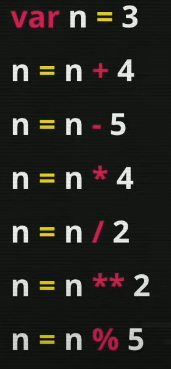
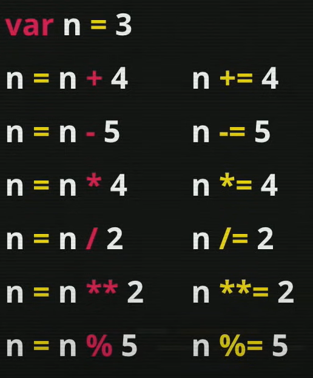
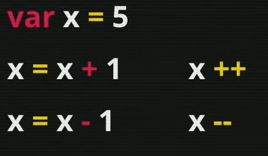

Operadores
Aritimético
Os operadores aritiméticos são:
- + - Soma
- - - Subtração
- * - Multiplicação
- / - Divisão
- % - Resto da divisão inteira
- ** - Potência
A ordem de precendência é...
- ()
- **
- *, / e %
- + e -
Atribuição
As variavéis podem receber uma atribuição, isso significa que ela deixa de ter o valor orignal dela e passa a receber um novo valor.
Por exemplo: n = 10
n = 10+5
Nesse exemplo o n agora passa a valer 15 e não mais 10, como era o seu valor original.
Vamos ver um exemplode atribuição como outro exemplo.
Podemos usar o modo simplificado, como na imagem a seguir.
Podemos usar o incremento para simplificar ainda mais

Lembrando que é diferente usar o incremento na frente da variável do que depois da variável.
Usando o incremento depois da variável teremos o seguinte resultado:
Ex: idade = 18;
idade++ o valor a ser retornado será 18, porém o valor a ser armazenado na variável será 19.
Quando usamos o incremento depois da variável, temos o seguinte resultado:
Ex: idade = 18;
++idade o valor a ser retornado será 19 porque o valor já foi atribuido e armazenado.
Relacional
Os operadores relacionais são:
- > - Maior que
- < - Menor que
- >= - Maior ou igual
- <= - Menor ou igual
- == - Igual
- != - Diferente
Temos também o sinal de identidade, que é representado pelos sinal ===, o que significa que a comparação presica ser identica, eles precisam ter o mesmo valor e o mesmo tipo para que o valor possa ser true.
Lógico
Para os operadores lógicos temos:
- ! - Negação - NOT
- && - Conjunção - E
- || - Disjunção - OU
A ordem de precendência é...
- !
- &&
- ||
Ternário
O operador térnario é o ?: dentro de uma mesma expressão, ele se chama ternário, pois é dividido em três partes.
Exemplo: teste ? true : false
Exemplo: media>=7 ? 'aprovado' : 'reprovado'
A ordem de precendência para os operadores
- Operadores aritiméticos - Na ordem correta.
- Operadores relacionais - Não possuem uma ordem entre eles.
- Operadores lógicos - Na ordem correta.